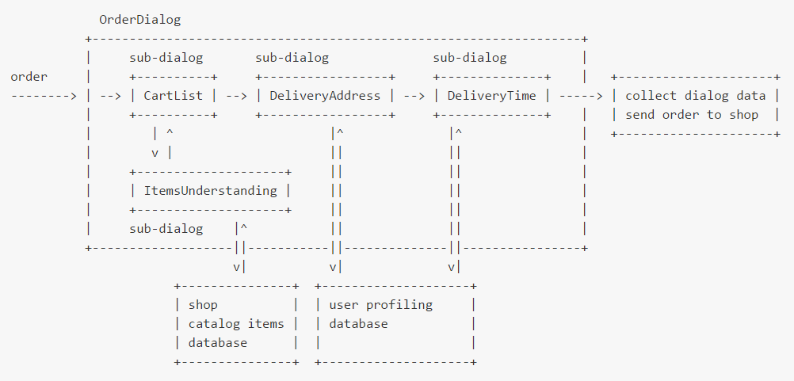

Dialogs modeled as finite state machines ?
Update (October, 30th 2020): I opensourced NaifJs, the dialog manager that implement my 4 years ago idea.
Update (October, 30th 2020): I opensourced NaifJs, the dialog manager that implement my 4 years ago idea.
I describe briefly my small study to model chatbot conversations as a finite state machines. I present here a personal project ((dialogs)), and I also mention great aBot open-source project, but eventually concluding with a dialog flow scripting languages apologia.
((dialogs)) — an abandoned experiment
In December 2015 I wrote ((Dialogs)) a very draft Ruby (my beloved programming language) code, with the aim to proof the concept of a conversational framework where any dialog is modeled as a finite state machine. A complex nested dialogs flow is modeled here as passages from a state of a machine to a state of another machine, in a graph of nested dialogs. In my approach each dialog is an instance (in terms of object oriented parlance) of a class (= a dialog template, with an associated DSL — Domain Specific Language).
At first glance all that sound cool, isn’t it ?

Nevertheless I abandoned soon my naif gist, and I tell you why in a moment, but it could be still interesting to read introduction/manifesto:
Abot — a promising open source bot framework
Abot is an open-source beautiful project where again, a dialog is modeled as a state machine; I just recently discovered it after having sketched my own ((dialogs)).
Abot is developed in Go language, based upon the gift of a chatbot engine/framework architecture of third-party plugins, where each plugin represent a service/dialog (with a behaviour modeled as a finite state machine). Here below an extract from the aBot github readme page:
Abot’s core consists of three parts:
1. An API that accepts natural language inputs.
2. A state machine that tracks grammar and context across inputs, enabling the chaining of commands.
3. A router that selects the appropriate plugins to send the input based on the current command and past context.
BTW, I love aBot plugins architecture as a great example of open-souce collaborative directory of resources (general statement), nevertheless I’m still perplex on the dialog modeling as a FSM (this is also a self-criticism to my (dialogs))!)
Why I don’t like FSM approach
Even if I can state without doubts that aBot is a good piece of software, more I think about the approach to model a dialog flow as a chain of dialogs each one rigidly built-upon a finite state machine, more I think this as a wrong way to build complex conversational applications.
There are some reasons of my skepticism and I just mention two:
First, whatever the implementation may be ( my modest ((dialogs)), aBot, or any framework with similar approach) dialogues are anyway “hard-coded” inside source code of a specific programming language, Ruby, Go, NodeJs or any other, and I strongly believe that’s bad, because in this way the dialog flow is drowned in the software.
func kwGetRating(in *dt.Msg) string {
biz, err := getBusiness(in)
if err != nil {
return ""
}
f := fmt.Sprintf("%.1f", biz.Rating)
return "They have a " + f + " star rating on Yelp."
}
Digression: If I can hazard a joking parallelism with web programming … immerge natural language output prints in the above mentioned way, is like times where we built web pages with CGI programming, producing HTML code with print (wrote in some programming language) in a running process spawned by a web server. Nowadays instead, HTML literals are better produced by scripting languages like PHP or Ruby on Rails, that embed programming language functions inside the HTML code… ;-)
Let’s now consider an example with ((dialogs)), of a dialog to collect items in a list: https://github.com/solyaris/dialogs/tree/master/dialogs/list
My gist was to split the FSM logic code (here I report just an extract from list.rb file) …:
class List < Dialog
def self.initialize_data
[]
end
#
# state: start
#
def start(text)
go :add, add_o
end
#
# state: add
#
def add(item)
case item
when yes_i
go :add, add_more_o
when no_i || exit_i
if data.empty?
reply aborted_o
return back :finish
end
# list items
reply_list
go :confirm, confirm_o
when help_i
help_add
when list_i
reply_list
go :add, add_more_o
else
#
# NLP understanding
#
interpret item
# add line to data text
data.push item
# back to the same state
go :add, add_more_o
end
end
...
…from the country language literals (by example in Italian, see the list_lang_it.rb here below:
# file: list_lang_it.rb
module Dialogs
class List < Dialog
private
# input methods
def yes_i
/\bsi\b|\bok\b|\bprocedi\b|\bvai\b/i
end
def del_i
/\bdel\b|\btogli\b|\brimuovi\b/i
end
# output methods
def confirm_o
"confermi lista ?"
end
def confirmed_o
"lista confermata!"
end
def del_o(max_num)
[
"quale item vuoi cancellare (1-#{max_num}) ?",
"cosa vuoi togliere (1-#{max_num}) ?"
].sample
end
Let’s consider insted “hello world” example from aBot project. Here below the code:
// Package hello responds to "Say something" with "Hello World".
package hello
import (
"log"
"github.com/itsabot/abot/shared/datatypes"
"github.com/itsabot/abot/shared/nlp"
"github.com/itsabot/abot/shared/plugin"
)
var p *dt.Plugin
func init() {
// Create the plugin, setting it up to communicate with Abot through
// the functions we specified.
var err error
p, err = plugin.New("github.com/itsabot/plugin_hello")
if err != nil {
log.Fatalln("failed to build plugin.", err)
}
// When Abot receives a message, it'll route the message to the correct
// package. Doing that requires a trigger, which tells Abot to send the
// response to this package when Commands include "say" and Objects
// include "something", "hello", etc. Case should always be lowercase,
// and the words will be stemmed automatically, so there's no need to
// include variations like "cat" and "cats". plugin.AppendTrigger is
// optional if you set KeywordHandlers (as described in the Building a
// Plugin guide), but since we only have a state machine, we'll add
// these words as triggers.
plugin.AppendTrigger(p, &nlp.StructuredInput{
Commands: []string{"say"},
Objects: []string{"something", "hello", "hi"},
})
// Abot includes a state machine designed to have conversations. This
// is the simplest possible example, but we'll cover more advanced
// cases with branching conversations, conditional next states, memory,
// jumps and more in other guides.
//
// For more information on state machines in general, see:
// https://en.wikipedia.org/wiki/Finite-state_machine
plugin.SetStates(p, [][]dt.State{[]dt.State{
{
OnEntry: func(in *dt.Msg) string {
return "Hello world!"
},
OnInput: func(in *dt.Msg) {
},
Complete: func(in *dt.Msg) (bool, string) {
return true, ""
},
},
}})
}
A complete code example of a plugin dialog that find restaurants nearby in aBot:
Now, my feeling is that the above code is rather hard to read, to maintain, to debug, even if “dialog volleys” are maybe high-performance in terms of CPU (but this have to be measured with metrics to be done).
The basic reason I’m now pretty contrary to the FSM implementation approach is that it become too complex to program really complex (= interesting) real conversations, if any dialog is coded as a finite state machine.
Last but not least, a FSM-driven dialog is probably too “rigid” looking as “robotic” and eventually annoying in machine-to-humans interactions. Nevertheless… FSM-driven protocols could be suitable for machine-to-machine (chatbot-to-chatbot) conversations… but this is a topic I would deepen in a future article (stay tuned)!
Decoupling dialogs scripts from logics behind!
At the end of the day I temporarily concluded that, a part very simple “transactional” applications, a better solution to manage complex chatbot conversations is to use dialog flow scripting engines. In this case there is a precise separation between the dialog script (front-end) and any transaction (done by back-end services). And, above all, scripting techniques allow to build up complex conversations by people that are not programmers or developers! And that’s a huge pro that I deepen in a next article, even if time ago I wrote few ideas about that in few articles:
Next month I’ll publish my analysis and comparison among some dialog flow scripting languages, on the article: “Chatbot Scripting Engines Comparison”, where I will also details some pros and cons of the rule-based bots engines.
21 October 2016 update
21 October update: I’m late with the “comparison” article, btw, in last months I studied better ChatScript and I wrote a very very simple introduction:
https://medium.freecodecamp.com/chatscript-for-beginners-chatbots-developers-c58bb591da8#.b9fcjpxe1
Now, even if I still hardly believe in chatbot scripting and smart rule-based opensource engines,
I’m thinking again about dialog modeling with finite state machines, with a specific interest in conversational state-full topics and machine to machine (= bots-to-bots) (automatic) (conversational).
In that path I’m re-coding (in Ruby) my previous ugly ((dialogs)) proof of concept, with now a more practical approach, coding a micro framework, codename: naif, maybe released in December 2016.
Stay tuned :)
23 February 2017 update
What do you think about it ? Please comment!
Originally published on Medium.